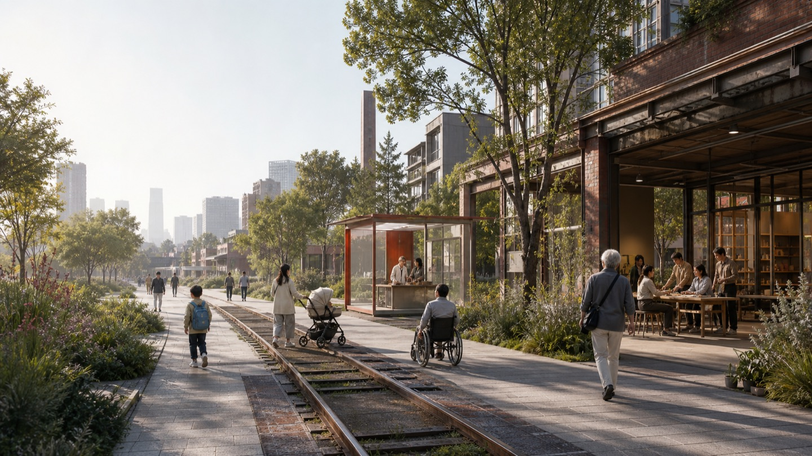

OPEN-CALL URBAN DESIGN01 / 15
GLOBAL HUMANISTIC ECOLOGICAL CITY
JING-ZHANG
FOR LIFE
A century of Jing-Zhang, a city for every life.
JING-ZHANG FOR LIFE02 / 15
THE PROBLEM
A city for ambition,
not for a whole life
01
Unstable housing
Family change, childcare and care break existing arrangements.
02
Time is consumed
Commute, school runs, health and care are fragmented.
03
Technology adds a gate
People who reject or cannot use AI are excluded.
JING-ZHANG FOR LIFE03 / 15
THE THESIS
A city should accompany
a complete life
From school and work to family, care, transition, retirement and the end of life, change should never become a reason for forced departure.
JING-ZHANG FOR LIFE04 / 15
FULL LIFE-CYCLE
Seven stages, not seven fixed groups
01
Child
Support transition
02
Youth
Support transition
03
Study
Support transition
04
Family
Support transition
05
Transition
Support transition
06
Aging
Support transition
07
End of life
Support transition
JING-ZHANG FOR LIFE05 / 15
THE BASIC TESTABLE UNIT
Housing · Learning · Work · Care · Health · Recreation · Culture
7×7
seven circles × seven supports
Universal baseline with hardship priority. Shared spaces create intergenerational ties; specialist rooms protect dignity.
Fifteen minutes is a promise to verify with a real network and field audits, not a circle on a diagram.
JING-ZHANG FOR LIFE06 / 15
ONE · SEVEN · THREE
One corridor
Seven circles
Three landmarks
The Life Corridor carries nature and memory; cross-links stitch communities, campuses, workplaces and transit.
JING-ZHANG FOR LIFE07 / 15
ECOLOGY + MOBILITY
FIG.04 · WALKING + BLUE-GREENNature is infrastructure
Continuous, accessible, legible, restful and help-ready. Nature takes priority over cars, parking and some intensity.
JING-ZHANG FOR LIFE08 / 15
INSTITUTION + ARCHITECTURE + EVENT
FIG.03 · THREE KEY AREASJING-ZHANG FOR LIFE09 / 15
INVISIBLE · VISIBLE · OPTIONAL
Understandable — and rejectable
01
Know · Explain
Purpose, rules and accountable person are visible.
02
Choose · Offline
Essential services always retain a non-digital path.
03
Human · Exit
Humans own high-impact decisions, correction, appeal and shutdown.
JING-ZHANG FOR LIFE10 / 15
HOUSING IS INNOVATION INFRASTRUCTURE
Trade some yield
for a city people can stay in
Stable tenancy
Nearby transfer after childbirth, separation or aging.
PRIORITY 01
Anti-displacement
No implementation without affordable equivalent access and genuine consent.
RED LINE
Adaptability
Adaptable units, accessibility retrofit and care space become the baseline.
LIFE-CYCLE
JING-ZHANG FOR LIFE11 / 15
CULTURE AS SPATIAL LOGIC
天
Harmony with nature
Seasonal shade, climate resilience, habitat and healing.
代
Intergenerational continuity
Shared courtyards, oral history, care and learning.
工
Self-reliance and craft
Making, testing, repair and failure records remain visible.
No pseudo-historic skin; express civilization through contemporary Beijing materials, scale and time.
JING-ZHANG FOR LIFE12 / 15
AI+ SCENARIOS
14 service scenarios / 3 validation scenarios
Life support
Housing transition, courses, reskilling, care, health, climate routes, oral history.
Industrial validation
Edge models, rehabilitation devices and accessible routes, each bounded and accountable.
Exit mechanism
Immature scenarios retire; sunk cost cannot block correction.
JING-ZHANG FOR LIFE13 / 15
WHO DEFINES VALUE?
Residents
Define lived value and priorities
VALUE
Professionals
Protect safety, standards and evidence boundaries
SAFETY
Enterprises
Provide capability under a Public-Benefit Contract
CAPABILITY
Government
Guarantee the public floor, rights and long-term duty
FLOOR
No operator and no ten-year operating budget, no project.
JING-ZHANG FOR LIFE14 / 15
EVIDENCE, NOT CLAIMS
FIG.05 · METRICS + RED LINES20.4%
concept ecological network · not statutory
7.5%
concept public network · not statutory
Housing burden, 8/80 routes, caregiver respite and desire to stay still need baselines. A machine PASS is neither excellence nor approval.
11.41 km²20.4% GREEN7.5% PUBLICOverview map · Three-level scope · Key areas · Land-use plan · Walking and cycling · Blue-green public space · Buildings · Renewal projects · AI scenarios · Core metrics · Task coverage · Self-check · Sources · Assumptions
JING-ZHANG FOR LIFE15 / 15
THE DELIVERY ORDER
Life before landmarks
Connection before development
Validation before scaling
JING-ZHANG FOR LIFE / 京张一生